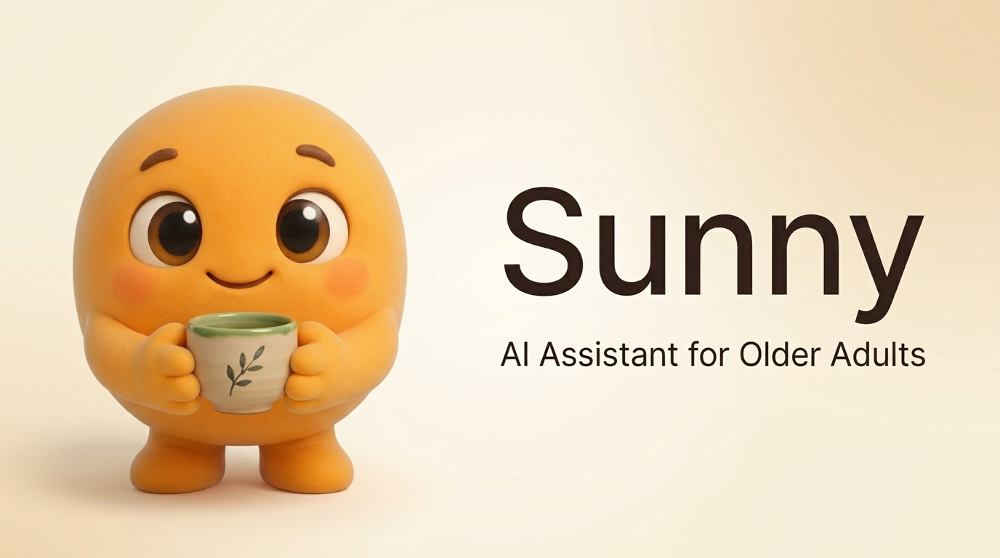

Hands-free voice input
Tap the microphone and speak. Sunny turns your words into text, streams them live, and sends your question when you pause.
Sunny is a gentle AI desktop companion built for older adults. Speak naturally or type a question, and Sunny helps with your computer, medications, meals, and day — out loud, in plain language.
Available for Windows, macOS, and Linux. Works on screens as small as a phone.

Simple tools for daily life, designed one button at a time.
Tap the microphone and speak. Sunny turns your words into text, streams them live, and sends your question when you pause.
Ask for any dish. Sunny finds a recipe, reads ingredients, and walks through each step out loud.
Set a pill name and time. Sunny speaks up when it's time, with a big "I Took It" button.
"My internet is slow" or "Is my battery okay?" Sunny checks Wi-Fi, battery, memory, and updates in plain English.
A soft chime and clear spoken reminders — never startling.
One tap makes every word bigger, up to 175%.
No terminal scripts, no passwords. Every sensitive action asks permission first.
Weather and headlines, read aloud in a calm voice.
Accessibility isn't an afterthought — it's the foundation.
Readable fonts and high contrast, one-tap resizing up to 175%.
Every button at least 48×48 px, labelled for screen readers.
Full text-to-speech plus an easy mute switch.
Honours your system's reduce-motion setting.
Complete keyboard nav with a visible focus ring.
No accounts, ads, or tracking. Data stays on your computer.
Grab Sunny, speak or type, and get patient help.
Grab Sunny from GitHub Releases and double-click. Nothing to configure, no sign-up.
Tap the microphone and talk, or type your question in the big friendly box. Both work the same way.
Get a spoken answer, step-by-step help, a recipe, or a health check — explained in plain, patient language.
No. Sunny is completely free and open source. No subscriptions, ads, or hidden fees.
An internet connection helps Sunny fetch recipes, weather, and news. Basic computer help works without one.
No. Sunny refuses terminal commands, passwords, network scanning, or hacking. Every sensitive action asks permission first and defaults to "No".
Windows, macOS, and Linux. Not sure? Start with the Windows download — it's the easiest.
Download Sunny free from GitHub Releases and get a patient helper who never rushes you, never shouts, and is always happy to explain again.